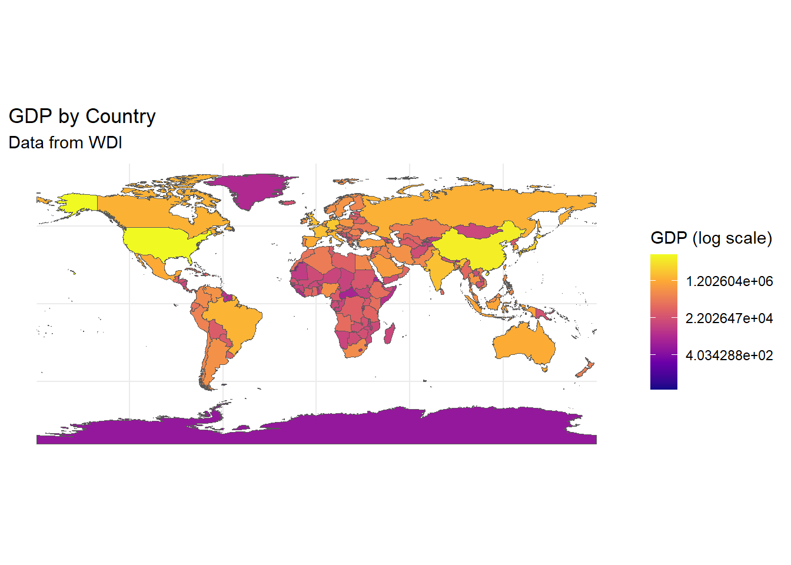

10 Advanced Visualizations
10.1 Preliminaries
10.1.1 Install Packages
For this lecture, you need to install a lot of packages. Please do this before our lecture as it will take a long time to install them. Furthermore, there might be issues in installing, such as needing to install other packages. Please let the professor know if you encounter any issues.
# Install necessary packages
if (!require(gganimate)) install.packages("gganimate")
if (!require(ggplot2)) install.packages("ggplot2")
if (!require(dplyr)) install.packages("dplyr")
if (!require(sf)) install.packages("sf")
if (!require(rnaturalearth)) install.packages("rnaturalearth")
if (!require(readr)) install.packages("readr")
if (!require(tidyr)) install.packages("tidyr")
if (!require(gifski)) install.packages("gifski")
if (!require(WDI)) install.packages("WDI")
if (!require(leaflet)) install.packages("leaflet")
#Load packages
library(gganimate)
library(ggplot2)
library(dplyr)
library(sf)
library(rnaturalearth)
library(readr)
library(tidyr)
library(gifski)
library(WDI)
library(leaflet)10.2 Animated Visualizations
gganimate includes animation to ggplot2; It adds some classes to the plot object in order to customise how it should change with time.
transition_*()defines how the data should be spread out and how it relates to itself across time.view_*()defines how the positional scales should change along the animation.shadow_*()defines how data from other points in time should be presented in the given point in time.enter_*()/exit_*()defines how new data should appear and how old data should disappear during the course of the animation.ease_aes()defines how different aesthetics should be eased during transitionsFor this lecture, we will use the
quotasdataset and fetch some World Bank Development Indicators from theWDIpackage.
10.2.1 Animated Bar Chart
At the start, you need to do the same steps as that of when doing the visualizations without animations.
## used (Mb) gc trigger (Mb) max used (Mb)
## Ncells 4790241 255.9 8260645 441.2 8260645 441.2
## Vcells 9625781 73.5 41390904 315.8 246655674 1881.9# Load the dataset
quotas <- read.csv("quotas.csv")
ch5.1<-quotas %>%
ggplot(aes(x=factor(AC_type_noST)))+
geom_bar(fill="darkgreen", color="black")+
labs(title = "Animated Bar Chart: Assembly Constituencies",
x="Reservation Status", y="Count")+
theme_minimal()+
transition_states(AC_type_noST, transition_length = 2, state_length = 1)The transition_states animates transitions between different categorical states. The AC_type_noST is the categorical variable that defines different animation states. The transition_length controls how long the transition between states lasts, measured in animation frames. While the state_length defines how long each state remains static before transitioning to the next one.
10.2.1.1 Saving and Embedding Animation
This is very important; it is different for Quarto where the gif is automatically rendered; however, later, we will find out how to save in Quarto.
anim_file <- "bar_chart.gif"
animate(ch5.1, duration = 4, fps = 10, renderer = gifski_renderer(anim_file),
preview = TRUE) # Preview the animation before rendering
# Save animation as a GIF
knitr::include_graphics(anim_file)The animate function generates the animation of the ggplot object ch5.1. duration = 4: Specifies that the animation should run for 4 seconds in total. fps = 10: Defines the frame rate, meaning the animation will show 10 frames per second. renderer = gifski_renderer(anim_file): Uses the gifski_renderer to save the animation as a GIF file named bar_chart.gif. preview = TRUE: Allows you to view the animation immediately in the RStudio Viewer before saving it as a file.
10.2.2 Animated Scatter Plot
ch5.2<-quotas %>%
ggplot(aes(x=Plit71, y=P_W71))+
geom_point(aes(color=factor(AC_type_noST)))+
labs(title="Animated Scatter Plot: Literacy vs. Employment",
x="Literacy Rate (1971)", y="Employment Rate (1971)", color="Reservation Status")+
theme_minimal()+
transition_reveal(Plit71)Here, the transition_reveal animates the points to be revealed over literacy rates
10.2.3 Animated Faceted Scatter Plot
10.2.3.1 Fetching WDI Data
For this portion, we will make use of the WDI database. To search which indicator you wish to work with, type WDIsearch("keyword")
ch5<-WDI(
country = c("USA","CHN", "IND", "BRA","NLD", "JPN"),
indicator = c("NY.GDP.PCAP.CD", "SP.DYN.LE00.IN"),
start = 2000,
end = 2020,
extra = TRUE
)This code chunk pulls data from the World Bank WDI database of 6 countries and two indicators (GDP per capita (current US$) and Life Expectancy at Birth (years). It fetches data from 2000 to 2020 and includes extra metadata such as region names and income levels.
#Cleaning the dataset
ch5 <- ch5 %>%
rename(GDPpc = NY.GDP.PCAP.CD, Life_Exp = SP.DYN.LE00.IN)
ch5<-ch5 %>%
filter(!is.na(GDPpc), !is.na(Life_Exp))
head(ch5)## country iso2c iso3c year status lastupdated GDPpc Life_Exp region
## 1 Brazil BR BRA 2000 2025-07-01 3766.548 69.584 Latin America & Caribbean
## 2 Brazil BR BRA 2001 2025-07-01 3176.289 69.980 Latin America & Caribbean
## 3 Brazil BR BRA 2002 2025-07-01 2855.940 70.396 Latin America & Caribbean
## 4 Brazil BR BRA 2003 2025-07-01 3090.607 70.884 Latin America & Caribbean
## 5 Brazil BR BRA 2004 2025-07-01 3663.823 71.361 Latin America & Caribbean
## 6 Brazil BR BRA 2005 2025-07-01 4827.782 71.832 Latin America & Caribbean
## capital longitude latitude income lending
## 1 Brasilia -47.9292 -15.7801 Upper middle income IBRD
## 2 Brasilia -47.9292 -15.7801 Upper middle income IBRD
## 3 Brasilia -47.9292 -15.7801 Upper middle income IBRD
## 4 Brasilia -47.9292 -15.7801 Upper middle income IBRD
## 5 Brasilia -47.9292 -15.7801 Upper middle income IBRD
## 6 Brasilia -47.9292 -15.7801 Upper middle income IBRDch5.3<-ch5 %>%
ggplot(aes(x=GDPpc, y=Life_Exp))+
geom_point(aes(color=region), alpha=0.7, size=3)+
labs(title="Faceted Scatter Plot: GDP vs. Life Expectancy",
subtitle = "Year: 2000-2020",
x="GDP per Capita (USD)",
y="Life Expectancy (Years)",
color="Region")+
theme_minimal()+
facet_wrap(~country, ncol=3)+
scale_x_log10()+ #log scale for better visualization
transition_states(year, transition_length = 2, state_length = 1)There are additional things here like the size=3 which changes the size of points. the scale_x_log10() was added because it applies a logarithmic scale to the x-axis since GDP per capital values vary widely, and a log scale makes comparisons clearer. The transition_states has year since each frame would represent a different year.
10.3 Animated Time Series
Let us just choose USA for this.
10.4 Animated Faceted Time Series
ch5.5<-ch5 %>%
ggplot(aes(x=year, y=GDPpc, group=country))+
geom_line(aes(color=country), size=1.2)+
labs(title = "Faceted Time Series: GDP Growth Over Time",
subtitle = "Year: 2000-2020",
x="Year",
y="GDP (Current US$)",
color="Country")+
theme_minimal()+
facet_wrap(~country, scales = "free_y")+ #allows free-scaling in the y-axis
transition_reveal(year)10.5 Maps
10.5.1 Where to get shapefiles?
The rnaturalearth provides some shapefiles you can use. A suggested site to find shapefiles of different countries: https://gadm.org/index.html . You can also locate shapefiles from the government sites.
We will make use of the packages like WDI, rnaturalearth,sf, gganimate, and leaflet. Do note however, that gganimate and leaflet does not work for PDF, thus, it can only be used for your Data Story Presentation.
10.6 Static Maps
10.6.1 Fetching GDP Data from WDI
## used (Mb) gc trigger (Mb) max used (Mb)
## Ncells 4790424 255.9 8260645 441.2 8260645 441.2
## Vcells 9627848 73.5 33112724 252.7 246655674 1881.9ch5_2<-WDI(country = "all",
indicator = "NY.GDP.MKTP.CD",
start = 2000,
end = 2022,
extra=TRUE)
#clean the dataset
ch5_2<-ch5_2 %>%
rename(gdp=NY.GDP.MKTP.CD,
iso_a3=iso2c) %>%
drop_na(gdp) #dropping missing valuesWe are retrieving GDP data for all countries from 2000 to 2022 and we are also renaming columns to match with map data found in the rnaturalearth. We also remove missing GDP values
This fetches the world map with country boundaries in sf (simple features) format to visualize the GDP data. We fetch medium-scale country boundaries in spatial data format and the returnclass="sf" ensures it can be used with ggplot2
We need to match the GDP data with the corresponding country for visualization. You can opt to retrieve the world map to find out how to merge both.
ggplot(data = wgdp) +
geom_sf(aes(fill = gdp_md)) +
scale_fill_viridis_c(option = "plasma", trans = "log", na.value = "grey") +
theme_minimal() +
labs(title = "GDP by Country",
subtitle = "Data from WDI",
fill = "GDP (log scale)")
We use the merged map and GDP data and geom_sf(aes(fill=gdp_md)) filles countries based on GDP. The scale_fill_viridis_c uses “plasma” which is best used for maps. The log scale transformation is used to better differentiate large economies and small economies and grey fill for missing data.
10.6.1.1 Animated World Map for GDP
Now we create an animated version of the map. You need to check that your time variable does not have any NA. It would be better to choose the years that are available consecutively so we will filter the data to only include from 2009-2019.
## [1] 2019 2014 2018 2017 2016 2013 2010 2009 2012 2006 2015 2003 2007 2011ch5.6 <- ggplot(data = wgdp_filtered) +
geom_sf(aes(fill = gdp_md)) +
scale_fill_viridis_c(option = "plasma", trans = "log", na.value = "grey50") +
theme_minimal() +
labs(title = "World GDP by Country: {closest_state}",
subtitle = "Data from World Development Indicators",
fill = "GDP (log scale)") +
transition_states(gdp_year) +
ease_aes('linear')10.7 Philippine Regional Map
We will use Ch6.xlsx containing Regional GDP and use the Philippine Regions shapefile.
## used (Mb) gc trigger (Mb) max used (Mb)
## Ncells 4791550 255.9 8260645 441.2 8260645 441.2
## Vcells 9668293 73.8 33112724 252.7 246655674 1881.9## Driver: ESRI Shapefile
## Available layers:
## layer_name geometry_type features fields crs_name
## 1 PH_Adm1_Regions.shp Polygon 17 7 WGS 84 / UTM zone 51N
## 2 Regions.shp Polygon 17 19 WGS 84## Reading layer `Regions.shp' from data source
## `C:\Users\jemma\OneDrive\Documents\DLSU\LBOMETR_Book\PH_Adm1_Regions.shp'
## using driver `ESRI Shapefile'
## Simple feature collection with 17 features and 19 fields
## Geometry type: MULTIPOLYGON
## Dimension: XY
## Bounding box: xmin: 114.2779 ymin: 4.587294 xmax: 126.605 ymax: 21.12189
## Geodetic CRS: WGS 84The code loads the sf package then st_layers checks all available layers in the shapefile because some shapefiles contains multiple layers like administrative boundaries, water bodies, etc. so we display the available layers in the console. The st_read(dsn "PH_Adm1_Regions.shp") specifies the data source and the layer = "Regions.shp" specifies the layer name to read (the one we will use and need).
Let us check if the shapefile was loaded correctly.
## Simple feature collection with 17 features and 19 fields
## Geometry type: MULTIPOLYGON
## Dimension: XY
## Bounding box: xmin: 114.2779 ymin: 4.587294 xmax: 126.605 ymax: 21.12189
## Geodetic CRS: WGS 84
## First 10 features:
## psgc_code name corr_code geo_level city_class inc_class urb_rur
## 1 1e+08 Region I (Ilocos Region) 1e+07 Reg <NA> <NA> <NA>
## 2 2e+08 Region II (Cagayan Valley) 2e+07 Reg <NA> <NA> <NA>
## 3 3e+08 Region III (Central Luzon) 3e+07 Reg <NA> <NA> <NA>
## 4 4e+08 Region IV-A (CALABARZON) 4e+07 Reg <NA> <NA> <NA>
## 5 5e+08 Region V (Bicol Region) 5e+07 Reg <NA> <NA> <NA>
## 6 6e+08 Region VI (Western Visayas) 6e+07 Reg <NA> <NA> <NA>
## 7 7e+08 Region VII (Central Visayas) 7e+07 Reg <NA> <NA> <NA>
## 8 8e+08 Region VIII (Eastern Visayas) 8e+07 Reg <NA> <NA> <NA>
## 9 9e+08 Region IX (Zamboanga Peninsula) 9e+07 Reg <NA> <NA> <NA>
## 10 1e+09 Region X (Northern Mindanao) 1e+08 Reg <NA> <NA> <NA>
## pop_2015 pop_2020 status adm1_pcode adm1_en adm1_alt
## 1 <NA> <NA> <NA> PH01 Region I (Ilocos Region) Ilocos Region
## 2 <NA> <NA> <NA> PH02 Region II (Cagayan Valley) Cagayan Valley
## 3 <NA> <NA> <NA> PH03 Region III (Central Luzon) Central Luzon
## 4 <NA> <NA> <NA> PH04 Region IV-A (Calabarzon) Calabarzon
## 5 <NA> <NA> <NA> PH05 Region V (Bicol Region) Bicol Region
## 6 <NA> <NA> <NA> PH06 Region VI (Western Visayas) Western Visayas
## 7 <NA> <NA> <NA> PH07 Region VII (Central Visayas) Central Visayas
## 8 <NA> <NA> <NA> PH08 Region VIII (Eastern Visayas) Eastern Visayas
## 9 <NA> <NA> <NA> PH09 Region IX (Zamboanga Peninsula) Zamboanga Peninsula
## 10 <NA> <NA> <NA> PH10 Region X (Northern Mindanao) Northern Mindanao
## adm0_pcode adm0_en date shape_len shape_area shape_sqkm
## 1 PH Philippines (the) 2022-11-09 14.99505 1.043983 12307.35
## 2 PH Philippines (the) 2022-11-09 19.13905 2.241812 26387.73
## 3 PH Philippines (the) 2022-11-09 15.94956 1.793513 21304.16
## 4 PH Philippines (the) 2022-11-09 27.62549 1.326720 15846.63
## 5 PH Philippines (the) 2022-11-09 44.92324 1.446324 17338.38
## 6 PH Philippines (the) 2022-11-09 27.77415 1.657591 20047.63
## 7 PH Philippines (the) 2022-11-09 29.11311 1.178431 14293.66
## 8 PH Philippines (the) 2022-11-09 42.02116 1.726804 20835.68
## 9 PH Philippines (the) 2022-11-09 23.18144 1.196677 14596.05
## 10 PH Philippines (the) 2022-11-09 15.00295 1.435115 17489.29
## geometry
## 1 MULTIPOLYGON (((120.9714 18...
## 2 MULTIPOLYGON (((121.9488 21...
## 3 MULTIPOLYGON (((122.2342 16...
## 4 MULTIPOLYGON (((122.3079 14...
## 5 MULTIPOLYGON (((122.9882 11...
## 6 MULTIPOLYGON (((121.4341 12...
## 7 MULTIPOLYGON (((124.093 11....
## 8 MULTIPOLYGON (((124.3678 12...
## 9 MULTIPOLYGON (((123.4129 8....
## 10 MULTIPOLYGON (((124.6987 9....We then check available attributes and also check the region names so that we can merge the shapefile with our GDP data.
## [1] "psgc_code" "name" "corr_code" "geo_level" "city_class" "inc_class" "urb_rur"
## [8] "pop_2015" "pop_2020" "status" "adm1_pcode" "adm1_en" "adm1_alt" "adm0_pcode"
## [15] "adm0_en" "date" "shape_len" "shape_area" "shape_sqkm" "geometry"## Simple feature collection with 6 features and 19 fields
## Geometry type: MULTIPOLYGON
## Dimension: XY
## Bounding box: xmin: 119.7497 ymin: 9.444193 xmax: 124.4249 ymax: 21.12189
## Geodetic CRS: WGS 84
## psgc_code name corr_code geo_level city_class inc_class urb_rur
## 1 1e+08 Region I (Ilocos Region) 1e+07 Reg <NA> <NA> <NA>
## 2 2e+08 Region II (Cagayan Valley) 2e+07 Reg <NA> <NA> <NA>
## 3 3e+08 Region III (Central Luzon) 3e+07 Reg <NA> <NA> <NA>
## 4 4e+08 Region IV-A (CALABARZON) 4e+07 Reg <NA> <NA> <NA>
## 5 5e+08 Region V (Bicol Region) 5e+07 Reg <NA> <NA> <NA>
## 6 6e+08 Region VI (Western Visayas) 6e+07 Reg <NA> <NA> <NA>
## pop_2015 pop_2020 status adm1_pcode adm1_en adm1_alt adm0_pcode
## 1 <NA> <NA> <NA> PH01 Region I (Ilocos Region) Ilocos Region PH
## 2 <NA> <NA> <NA> PH02 Region II (Cagayan Valley) Cagayan Valley PH
## 3 <NA> <NA> <NA> PH03 Region III (Central Luzon) Central Luzon PH
## 4 <NA> <NA> <NA> PH04 Region IV-A (Calabarzon) Calabarzon PH
## 5 <NA> <NA> <NA> PH05 Region V (Bicol Region) Bicol Region PH
## 6 <NA> <NA> <NA> PH06 Region VI (Western Visayas) Western Visayas PH
## adm0_en date shape_len shape_area shape_sqkm geometry
## 1 Philippines (the) 2022-11-09 14.99505 1.043983 12307.35 MULTIPOLYGON (((120.9714 18...
## 2 Philippines (the) 2022-11-09 19.13905 2.241812 26387.73 MULTIPOLYGON (((121.9488 21...
## 3 Philippines (the) 2022-11-09 15.94956 1.793513 21304.16 MULTIPOLYGON (((122.2342 16...
## 4 Philippines (the) 2022-11-09 27.62549 1.326720 15846.63 MULTIPOLYGON (((122.3079 14...
## 5 Philippines (the) 2022-11-09 44.92324 1.446324 17338.38 MULTIPOLYGON (((122.9882 11...
## 6 Philippines (the) 2022-11-09 27.77415 1.657591 20047.63 MULTIPOLYGON (((121.4341 12...## [1] "Region I (Ilocos Region)"
## [2] "Region II (Cagayan Valley)"
## [3] "Region III (Central Luzon)"
## [4] "Region IV-A (CALABARZON)"
## [5] "Region V (Bicol Region)"
## [6] "Region VI (Western Visayas)"
## [7] "Region VII (Central Visayas)"
## [8] "Region VIII (Eastern Visayas)"
## [9] "Region IX (Zamboanga Peninsula)"
## [10] "Region X (Northern Mindanao)"
## [11] "Region XI (Davao Region)"
## [12] "Region XII (SOCCSKSARGEN)"
## [13] "National Capital Region (NCR)"
## [14] "Cordillera Administrative Region (CAR)"
## [15] "Region XIII (Caraga)"
## [16] "MIMAROPA Region"
## [17] "Bangsamoro Autonomous Region In Muslim Mindanao (BARMM)"Now, we load our Regional GDP package;
## New names:
## • `` -> `...1`## # A tibble: 6 × 26
## ...1 region `2000` `2001` `2002` `2003` `2004` `2005` `2006` `2007` `2008` `2009` `2010`
## <chr> <chr> <dbl> <dbl> <dbl> <dbl> <dbl> <dbl> <dbl> <dbl> <dbl> <dbl> <dbl>
## 1 NCR National … 2.42e9 2.48e9 2.51e9 2.62e9 2.84e9 2.99e9 3.16e9 3.37e9 3.52e9 3.52e9 3.75e9
## 2 CAR Cordiller… 1.44e8 1.49e8 1.56e8 1.64e8 1.73e8 1.76e8 1.83e8 1.96e8 2.03e8 2.08e8 2.20e8
## 3 I Ilocos Re… 2.40e8 2.45e8 2.53e8 2.64e8 2.78e8 2.91e8 3.08e8 3.26e8 3.36e8 3.35e8 3.64e8
## 4 II Cagayan V… 1.58e8 1.64e8 1.66e8 1.71e8 1.86e8 1.83e8 2.01e8 2.14e8 2.19e8 2.24e8 2.33e8
## 5 III Central L… 7.07e8 7.49e8 7.92e8 8.26e8 8.52e8 8.86e8 9.27e8 9.82e8 1.03e9 1.04e9 1.14e9
## 6 IVA CALABARZON 1.05e9 1.07e9 1.12e9 1.18e9 1.24e9 1.31e9 1.37e9 1.45e9 1.50e9 1.49e9 1.64e9
## # ℹ 13 more variables: `2011` <dbl>, `2012` <dbl>, `2013` <dbl>, `2014` <dbl>, `2015` <dbl>,
## # `2016` <dbl>, `2017` <dbl>, `2018` <dbl>, `2019` <dbl>, `2020` <dbl>, `2021` <dbl>,
## # `2022` <dbl>, `2023` <dbl>We need to convert the columns to have the same format first so that we can edit all of them later on when we transform to long format since different formats cannot be combined when modifying to long format.
Now, we can modify
library(tidyverse)
rgdpl<-rgdp %>%
pivot_longer(cols = -region, names_to = "Year", values_to = "GDP") %>%
mutate(Year=as.numeric(Year),
GDP=as.numeric(GDP))
head(rgdpl)## # A tibble: 6 × 3
## region Year GDP
## <chr> <dbl> <dbl>
## 1 National Capital Region 2000 2416391870.
## 2 National Capital Region 2001 2483504980.
## 3 National Capital Region 2002 2507171644.
## 4 National Capital Region 2003 2624052475.
## 5 National Capital Region 2004 2841837836.
## 6 National Capital Region 2005 2988546218.## [1] "National Capital Region" "Cordillera Administrative Region"
## [3] "Ilocos Region" "Cagayan Valley"
## [5] "Central Luzon" "CALABARZON"
## [7] "MIMAROPA Region" "Bicol Region"
## [9] "Western Visayas" "Central Visayas"
## [11] "Eastern Visayas" "Zamboanga Peninsula"
## [13] "Northern Mindanao" "Davao Region"
## [15] "SOCCSKSARGEN" "Caraga"
## [17] "BARMM"Since we know that the names are different in the shapefile, we rename the regions so that they match through mapping.
region_mapping <- c(
"Ilocos Region" = "Region I (Ilocos Region)",
"Cagayan Valley" = "Region II (Cagayan Valley)",
"Central Luzon" = "Region III (Central Luzon)",
"CALABARZON" = "Region IV-A (CALABARZON)",
"Bicol Region" = "Region V (Bicol Region)",
"Western Visayas" = "Region VI (Western Visayas)",
"Central Visayas" = "Region VII (Central Visayas)",
"Eastern Visayas" = "Region VIII (Eastern Visayas)",
"Zamboanga Peninsula" = "Region IX (Zamboanga Peninsula)",
"Northern Mindanao" = "Region X (Northern Mindanao)",
"Davao Region" = "Region XI (Davao Region)",
"SOCCSKSARGEN" = "Region XII (SOCCSKSARGEN)",
"National Capital Region" = "National Capital Region (NCR)",
"Cordillera Administrative Region" = "Cordillera Administrative Region (CAR)",
"Caraga" = "Region XIII (Caraga)",
"BARMM" = "Bangsamoro Autonomous Region In Muslim Mindanao (BARMM)",
"MIMAROPA Region" = "MIMAROPA Region"
)rgdpl$region <- dplyr::recode(rgdpl$region, !!!region_mapping)
setdiff(sp_df$region, rgdpl$region) # Should be (0)## character(0)Now, we can merge.
## character(0)#remove unnecessary columns and mutate GDP to billions
rgdp_map <- rgdp_map %>%
select(region, Year, GDP, geometry) %>%
mutate(GDP = GDP / 1e9)10.7.0.1 Choropleth Map
A Choropleth Map is a type of thematic map where regions are color-coded based on a statistical value (e.g., GDP, population, unemployment rate, etc.). It is commonly used in geographic data visualization to show spatial variations across different regions. For the static map, let us choose the latest year, 2023;
library(scales)
# Modify the Choropleth Map
ggplot(rgdp2023) +
geom_sf(aes(fill = GDP), color = "white") + # Fill regions based on GDP
scale_fill_viridis_c(
option = "magma",
name = "GDP (2023)",
labels = label_number(accuracy = 0.1, suffix = "B", big.mark = ",") # Fix rounding issue
) +
labs(title = "Regional GDP of the Philippines (2023)") +
theme_minimal()
10.7.0.2 Bubble Map
A Bubble Map is a type of thematic map that represents data values using circles (bubbles) placed over specific locations. The size of the bubble corresponds to the magnitude of the variable being visualized (e.g., GDP, population, sales, etc.). We use 2023 again.
The first step that we need to do is calculate the centroids using st_centroid from the sf package because this calculates the geometric center of each polygon region in the shapefile. These will be used as our bubble locations and to ensure that there will be no overlapping with borders.
## Warning: st_centroid assumes attributes are constant over geometries## Simple feature collection with 17 features and 3 fields
## Geometry type: POINT
## Dimension: XY
## Bounding box: xmin: 119.8902 ymin: 6.580654 xmax: 125.8263 ymax: 17.35385
## Geodetic CRS: WGS 84
## First 10 features:
## region Year GDP geometry
## 1 Region I (Ilocos Region) 2023 0.7014687 POINT (120.4827 16.90283)
## 2 Region II (Cagayan Valley) 2023 0.4470732 POINT (121.7316 17.20396)
## 3 Region III (Central Luzon) 2023 2.3184283 POINT (120.8223 15.3919)
## 4 Region IV-A (CALABARZON) 2023 3.0952557 POINT (121.568 14.16225)
## 5 Region V (Bicol Region) 2023 0.6103399 POINT (123.4734 13.27216)
## 6 Region VI (Western Visayas) 2023 1.0242699 POINT (122.652 10.84319)
## 7 Region VII (Central Visayas) 2023 1.3811721 POINT (123.6147 9.921139)
## 8 Region VIII (Eastern Visayas) 2023 0.5235611 POINT (124.9534 11.53574)
## 9 Region IX (Zamboanga Peninsula) 2023 0.4473210 POINT (122.8477 7.825902)
## 10 Region X (Northern Mindanao) 2023 0.9847503 POINT (124.6742 8.187355)We now create our Bubble Map
ggplot()+
geom_sf(data=rgdp2023, fill = "gray", color="white")+#base map
geom_point(data = phr_centroids,
aes(x = st_coordinates(geometry)[,1],
y = st_coordinates(geometry)[,2],
size = GDP,
color = GDP),
alpha = 0.7) +
scale_size(range = c(2, 15), name = "GDP (2023)") + # Adjust bubble size
scale_color_viridis_c(option = "magma", name = "GDP (2023)", labels = label_number(accuracy = 0.1, suffix = "B", big.mark = ",")) +
labs(title = "Regional GDP of the Philippines (2023)",
subtitle = "Bubble Size Represents GDP",
x="Coordinates",
y="Coordinates")+
theme_minimal()
As you can see, the base map is drawn using geom_sf() then the bubbles represent the GDP values. The bubble size and color represent GDP magnitude.
You will notice that ggplot() is empty, this creates an empty ggplot canvas where the map layers will be added using the geom_sf.
In the aes there’s x = st_coordinates(geometry)[,1] same for y. These extract the longitude and latitude of each centroid.
The scale_size() range sets the bubble sizes between 2 and 15 units but you can edit this.
Now, scale_viridis_c has more things, the name sets the legend title for GDP colors. the labels ensures decimal precision and adds suffix B, plus, adds comma separators since we do not want the legend to contain scientific notations.
10.8 Animated Map
10.8.0.1 Animated Philippine Regional GDP Choropleth Map
We will now make an animated version of the Regional GDP Choropleth Map since we have data from 2000 to 2023. Let’s convert to billions like what we did for the 2023.
It takes really long to render (it depends on the memory you have in your laptops) so, I will place the best strategy, that is creating static maps and combining them to form a video. Notice that when cleaning the environment, I chose to keep rgdp_map since we will still use this.
## used (Mb) gc trigger (Mb) max used (Mb)
## Ncells 4806279 256.7 8260645 441.2 8260645 441.2
## Vcells 35732758 272.7 176829228 1349.1 246655674 1881.9We need to create a directory within our working directory where the images will be saved.
We now generate static maps; this requires us to create a function/loop. You will notice that the plot.background was set twice. It is because when we use the av, the default is a black setting so it’s better to have a white background set for the plot and the entire canvas.
for(year in 2000:2023){
#filter data for the specific year
data_year<-rgdp_map %>% filter(Year==year)
#Generate the plot
ip<-ggplot(data_year) +
geom_sf(aes(fill = GDP), color = "white") +
scale_fill_viridis_c(
option = "magma",
name = "GDP",
labels = scales::label_number(accuracy = 0.1, suffix = "B", big.mark = ",")
) +
labs(
title = paste("Regional GDP of the Philippines"),
subtitle = paste("Year:", year),
fill = "GDP (Billion $)"
) +
theme_minimal() +
theme(
plot.title = element_text(size = 16, face = "bold"),
plot.subtitle = element_text(size = 14),
panel.background = element_rect(fill = "white", color = NA), # Set white background
plot.background = element_rect(fill = "white", color = NA) # Set white background
)
# Save the plot as an image
ggsave(filename = paste0("ch_gdp_frames/gdp_", year, ".png"), plot = ip, width = 8, height = 6, dpi = 300)
}You need to edit some parts, such as the 2000:2023 with whatever years you have; you need to filter data depending on how you called the time column. Then edit the fill and other things.
We now combine our static maps into MP4. If you want the transition for each year to be seen clearly, the framerate is set at 1 to have 1 frame per second and the frame is repeated twice. the vfilter makes the video HD
10.9 Practical: Advanced Visualizations
For the practical, you need to search and clean the dataset on your own. Please search in PSA OpenStat: Number of Registered Live Births by Sex and by Usual Residence of Mother (Region, Province and Highly Urbanized City), Philippines: January - December 2013-2022. Only gather regional data since the shapefile that is given for this practical is for Regions only. Please save each animation using anim_save
- Using PSA OpenStat (2013-2022) data, create an animated bar chart showing the total number of live births per year. Differentiate Male vs. Female births using
fill - Create an animated bar chart that compares the number of live births per region over time (2013-2022). Use
transition_states(year, wrap = FALSE)to animate regional birth counts changing over time. Determine the region with the highest live births in each frame. - Select 3-5 regions and visualize their live birth trends (2013-2022) using an animated time series plot.
- Using PSA OpenStat (2013-2022) data and a Philippines regional shapefile, create a static choropleth map of the recent number of live births per region. Color the regions based on
birth count - Using PSA OpenStat (2013-2022) data and a Philippines regional shapefile, create an animated choropleth map showing how the number of live births per region changes over time. Color the regions based on
birth count - How do birth trends differ across Philippine regions?
- Which regions have experienced the highest increase or decrease in live births from 2013 to 2022?
- How does using
gganimatewithsfenhance your ability to analyze spatial(and time) data trends?